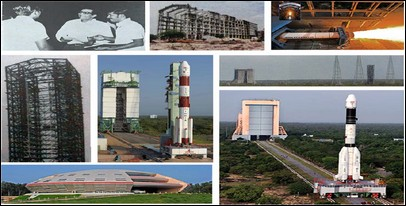
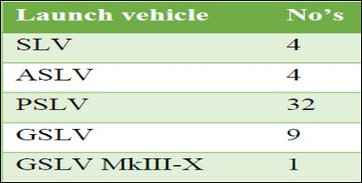

The successful lift-off of the PSLV-C29 Launch vehicle on December 16, 2015 from the First Launch Pad at Satish Dhawan Space Centre (SDSC), SHAR has created a historical milestone in the history of Indian Space Research Organisation. It is the 50th Launch of the Satellite Launch Vehicle from this spaceport of India. Sriharikota has witnessed injection of various indigenous and foreign satellites into the intended orbits through these Launch Vehicles.
Towards this, a function was arranged at SDSC, SHAR on December 29, 2015 graced by Chairman, ISRO and a multitude of Former and Present Senior Executives of ISRO/ DOS along with the serving and retired employees of SDSC, SHAR.
Shri A. S. Kiran Kumar, Chairman, ISRO dwelt upon the evolution of SDSC, SHAR from a bare island into a World Class Launch Base. He also explained about the role played by team culture of ISRO in sustaining successful missions.
Starting with a modest frequency of launches, now we have witnessed a significant shift in the level of operations with 4 successful missions within last 6 months. With untiring efforts of all the teams of ISRO/DOS, 50 Launches have been completed from SDSC SHAR by December 2015.
Five Launches per year have been achieved during the last two years and it is targeted to increase the Launch frequency to 8 missions in the immediate future and more than 12 missions per year subsequently. Towards meeting these future It is interesting to know how the visionary initiatives of Dr.Vikram A Sarabhai and Prof. Satish Dhawan transformed this small island of natural beauty into a World-class Launch base. The journey started with the realisation of facilities for integration and launch of the first Satellite Launch Vehicle SLV-3. Initially independent Launch Pads were realised for the first generation Launch Vehicles of SLV-3 and Augmented Satellite Launch Vehicle (ASLV).
Subsequently, two versatile Launch Pads namely First Launch Pad and Second Launch Pad were realised. Both pads have provisions to integrate and launch the present operational vehicles of PSLV and GSLV. The Second Launch Pad is augmented to meet the requirements of integration and launch of next generation Launch vehicle GSLV MkIII. Parallelly facilities are established for production of Solid Motors required for all the Launch Vehicles of ISRO.
Starting with a modest frequency of launches, now we have witnessed a significant shift in the level of operations with 4 successful missions within last 6 months. With untiring efforts of all the teams of ISRO/DOS, 50 Launches have been completed from SDSC SHAR by December 2015.
Five Launches per year have been achieved during the last two years and it is targeted to increase the Launch frequency to 8 missions in the immediate future and more than 12 missions per year subsequently. Towards meeting these future targets, Second Vehicle Assembly Building (SVAB) is being realised as an additional integration facility, with suitable interfacing to Second Launch Pad. Necessary augmentations are also planned in Solid Motor production and other Launch base infrastructure.
A man created triggered a security scare after he was seen running parallel to Prime Minister Narendra Modi's convoy in Mysuru, with a bag on Saturday. As people lined up on both sides of the road, the man chanted "Modi, Modi" and ..
Read more
PM visits Avadhoota Datta Peetham in Mysuru, attends Centenary Celebrations...
Read more
Prime Minister Narendra Modi had announced on October 15, the birth anniversary of Kalam, that a memorial would be built for the late 'Missile Man' and had requested Tamil Nadu government...
Read moreRSS Chief Mohan Bhagwat has strongly batted for financial assistance to institutions like Kerala's famous Thanthra Vidyaa Peettham, where temple culture..
Read more